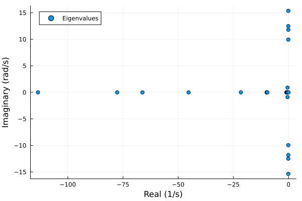

Eigenvalue Analysis
Small-signal stability analysis through the eigenvalues of the linearized DAE system.
Quick Start
using Powerful
using PowerfulCases
# Load system and solve power flow
case = load("ieee14")
sys_pf = SystemModel(parse_network(case.raw))
sol_pf = solve(ACPowerFlowProblem(sys_pf), Newton())
# Dynamic models: GENCLS generators, SEXS exciters, TGOV1 governors
dyr_data = parse_dynamics(case.dyr, sys_pf)
# Create TDS problem at the power flow operating point
init = setup_tds(sol_pf, dyr_data)
prob = TDSProblem(init; tspan = (0.0, 10.0))
# Compute eigenvalues
result = compute_eigenvalues(prob)
result.n_positive, result.n_zeros, result.n_negative(0, 1, 29)# Print the report (the participation factor table is omitted above 10 states)
print_eigenvalue_report(result; max_modes = 10)
======================================================================
Eigenvalue Analysis Report
======================================================================
STATISTICS
----------------------------------------------------------------------
┌─────────────────────┬─────────────────┬───────────────────┬───────┐
│ Positive (unstable) │ Zero (marginal) │ Negative (stable) │ Total │
├─────────────────────┼─────────────────┼───────────────────┼───────┤
│ 0 │ 1 │ 29 │ 30 │
└─────────────────────┴─────────────────┴───────────────────┴───────┘
EIGENVALUE DATA
----------------------------------------------------------------------
┌───────┬─────────────────┬───────────────┬───────────────┬───────────┬───────────────┬─────────────┐
│ Mode │ Most Associated │ Real │ Imag │ Freq (Hz) │ Nat.Freq (Hz) │ Damping (%) │
├───────┼─────────────────┼───────────────┼───────────────┼───────────┼───────────────┼─────────────┤
│ #1 │ SEXS_LAW_y_4 │ -1.135295e+02 │ 0.000000e+00 │ 0.0000 │ 0.0000 │ 0.00 │
│ #2 │ SEXS_LAW_y_5 │ -7.764236e+01 │ 0.000000e+00 │ 0.0000 │ 0.0000 │ 0.00 │
│ #3 │ SEXS_LAW_y_4 │ -6.619260e+01 │ 0.000000e+00 │ 0.0000 │ 0.0000 │ 0.00 │
│ #4 │ SEXS_LAW_y_3 │ -4.529692e+01 │ 0.000000e+00 │ 0.0000 │ 0.0000 │ 0.00 │
│ #5 │ SEXS_LAW_y_1 │ -2.158803e+01 │ 0.000000e+00 │ 0.0000 │ 0.0000 │ 0.00 │
│ #6 │ TGOV1_LAG_y_2 │ -9.879482e+00 │ 0.000000e+00 │ 0.0000 │ 0.0000 │ 0.00 │
│ #7 │ TGOV1_LAG_y_3 │ -9.841989e+00 │ 0.000000e+00 │ 0.0000 │ 0.0000 │ 0.00 │
│ #8 │ TGOV1_LAG_y_4 │ -9.831408e+00 │ 0.000000e+00 │ 0.0000 │ 0.0000 │ 0.00 │
│ #9 │ TGOV1_LAG_y_5 │ -9.796779e+00 │ 0.000000e+00 │ 0.0000 │ 0.0000 │ 0.00 │
│ #10 │ TGOV1_LAG_y_5 │ -9.585902e+00 │ 0.000000e+00 │ 0.0000 │ 0.0000 │ 0.00 │
│ #11 │ SEXS_LL_x_4 │ -9.287301e-01 │ 0.000000e+00 │ 0.0000 │ 0.0000 │ 0.00 │
│ #12 │ SEXS_LL_x_5 │ -8.948344e-01 │ 0.000000e+00 │ 0.0000 │ 0.0000 │ 0.00 │
│ #13 │ SEXS_LL_x_4 │ -8.749942e-01 │ 0.000000e+00 │ 0.0000 │ 0.0000 │ 0.00 │
│ #14 │ SEXS_LL_x_3 │ -8.144175e-01 │ 0.000000e+00 │ 0.0000 │ 0.0000 │ 0.00 │
│ #15 │ SEXS_LL_x_1 │ -6.025716e-01 │ 0.000000e+00 │ 0.0000 │ 0.0000 │ 0.00 │
│ #16 │ TGOV1_LL_x_2 │ -4.745799e-01 │ 0.000000e+00 │ 0.0000 │ 0.0000 │ 0.00 │
│ #17 │ TGOV1_LL_x_3 │ -4.737833e-01 │ 0.000000e+00 │ 0.0000 │ 0.0000 │ 0.00 │
│ #18 │ TGOV1_LL_x_4 │ -4.735264e-01 │ 0.000000e+00 │ 0.0000 │ 0.0000 │ 0.00 │
│ #19 │ TGOV1_LL_x_5 │ -4.724446e-01 │ 0.000000e+00 │ 0.0000 │ 0.0000 │ 0.00 │
│ #20 │ GENCLS_omega_5 │ -4.501445e-01 │ -8.921099e-01 │ 0.1420 │ 0.1590 │ 45.05 │
│ #21 │ GENCLS_omega_5 │ -4.501445e-01 │ 8.921099e-01 │ 0.1420 │ 0.1590 │ 45.05 │
│ #22 │ GENCLS_omega_3 │ -1.174440e-01 │ -1.248829e+01 │ 1.9876 │ 1.9877 │ 0.94 │
│ #23 │ GENCLS_omega_3 │ -1.174440e-01 │ 1.248829e+01 │ 1.9876 │ 1.9877 │ 0.94 │
│ #24 │ GENCLS_omega_2 │ -1.097512e-01 │ -1.535925e+01 │ 2.4445 │ 2.4446 │ 0.71 │
│ #25 │ GENCLS_omega_2 │ -1.097512e-01 │ 1.535925e+01 │ 2.4445 │ 2.4446 │ 0.71 │
│ #26 │ GENCLS_omega_5 │ -1.050366e-01 │ -9.943176e+00 │ 1.5825 │ 1.5826 │ 1.06 │
│ #27 │ GENCLS_omega_5 │ -1.050366e-01 │ 9.943176e+00 │ 1.5825 │ 1.5826 │ 1.06 │
│ #28 │ GENCLS_omega_4 │ -9.300713e-02 │ -1.179738e+01 │ 1.8776 │ 1.8777 │ 0.79 │
│ #29 │ GENCLS_omega_4 │ -9.300713e-02 │ 1.179738e+01 │ 1.8776 │ 1.8777 │ 0.79 │
│ #30 * │ GENCLS_delta_5 │ 7.300875e-14 │ 0.000000e+00 │ 0.0000 │ 0.0000 │ 0.00 │
└───────┴─────────────────┴───────────────┴───────────────┴───────────┴───────────────┴─────────────┘
* = marginal (|Re| ≤ tol), ** = unstable (Re > tol)
Note: Participation factors table omitted (30 modes > 10 limit)
======================================================================Understanding the Results
The EigenvalueResult struct contains:
| Field | Type | Description |
|---|---|---|
eigenvalues | Vector | Complex eigenvalues (modes) |
right_eigenvectors | Matrix | Mode shapes (columns) |
left_eigenvectors | Matrix | Left eigenvectors |
participation_factors | Matrix{Float64} | State-mode associations (states × modes) |
state_names | Vector{Symbol} | Name of each state, e.g. :GENCLS_omega_2 |
n_positive | Int | Unstable modes (Re > tol) |
n_zeros | Int | Marginal modes (|Re| <= tol) |
n_negative | Int | Stable modes (Re < -tol) |
zero_mass_indices | Vector{Int} | States with a zero mass coefficient (reduced) |
n_states | Int | Number of states in the state matrix |
State names are {Model}_{state}_{n}, where n is the position of the instance in the model (the order of prob.sys.models.GENCLS, for example), not its bus number:
prob.sys.models.GENCLS.BUS # bus of GENCLS instance 1, 2, ...5-element Vector{Int32}:
1
2
3
6
8Stability Interpretation
| n_positive | Meaning |
|---|---|
| 0 | System is stable or marginally stable |
| > 0 | System has unstable modes |
When every generator is modeled dynamically and none is an infinite bus, the rotor angles are only defined relative to each other, which gives one eigenvalue at zero (the marginal mode in the Quick Start).
Oscillatory modes appear as complex conjugate pairs. The imaginary part gives the oscillation frequency and the real part the damping:
λ = result.eigenvalues
osc = findall(x -> imag(x) > 0, λ) # one of each conjugate pair
freq_hz = imag.(λ[osc]) ./ (2π) # oscillation frequency
damping = -real.(λ[osc]) ./ abs.(λ[osc]) # damping ratio
[freq_hz damping]5×2 Matrix{Float64}:
0.141984 0.450485
1.98757 0.00940392
2.4445 0.00714543
1.58251 0.0105631
1.87761 0.00788346Participation Factors
Participation factors indicate which states contribute most to each mode. Each column (mode) sums to 1:
# Most associated state for each oscillatory mode
[result.state_names[argmax(result.participation_factors[:, j])] for j in osc]5-element Vector{Symbol}:
:GENCLS_omega_5
:GENCLS_omega_3
:GENCLS_omega_2
:GENCLS_omega_5
:GENCLS_omega_4Eigenvalue Plot
using Plots
scatter(real.(λ), imag.(λ); xlabel = "Real (1/s)", ylabel = "Imaginary (rad/s)",
label = "Eigenvalues")
Reporting
Console Output
print_eigenvalue_report(result) # stdout; participation factors up to 50 states
print_eigenvalue_report(result; max_modes = 100) # participation factors up to 100 states
print_eigenvalue_report(result; io = IOBuffer()) # Custom IOThe report lists every mode; max_modes is the largest number of modes for which the participation factor table is printed.
File Output
write_eigenvalue_report(result, "stability.txt")Theory
The DAE system is linearized at the steady state:
T · dx/dt = f(x, y) (differential equations)
0 = g(x, y) (algebraic equations)Eliminating the algebraic variables gives the state matrix:
As = T⁻¹ · (fx - fy · gy⁻¹ · gx)where fx, fy, gx, gy are the Jacobian blocks (computed with automatic differentiation) and T is the diagonal mass matrix of the differential states (for example 2H for rotor speeds).
Zero Mass Coefficient Handling
A differential state whose mass coefficient is zero (for example a lag block with a zero time constant) is an algebraic equation in disguise. Such states are:
- Identified from the mass matrix diagonal
- Moved to the end of the state vector
- Eliminated together with the algebraic variables
Their indices are listed in result.zero_mass_indices.
Complete Example
Synchronous machines with converter-interfaced renewables, loaded from a DYR variant of the IEEE 14-bus case (GENROU generators with SEXS and TGOV1, REGCA1 converters with REECA1 electrical controls):
sys2 = SystemModel(parse_network(case.raw))
sol2 = solve(ACPowerFlowProblem(sys2), Newton())
dyr2 = parse_dynamics(file(case, :dyr; variant = "reeca1"), sys2)
keys(dyr2)(:REECA1, :TGOV1, :GENROU, :SEXS, :REGCA1)prob2 = TDSProblem(setup_tds(sol2, dyr2); tspan = (0.0, 10.0))
result2 = compute_eigenvalues(prob2)
if result2.n_positive > 0
println("System has $(result2.n_positive) unstable modes")
else
println("System is stable ($(result2.n_negative) stable, $(result2.n_zeros) marginal)")
endSystem is stable (40 stable, 3 marginal)variants(case, :psse_dyr) lists the dynamic data variants of a case.
Sensitivity to Model Parameters
eigenvalue_sensitivity gives the derivatives of the eigenvalues with respect to parameters of the dynamic models (controller gains, time constants, inertias, ...), for tuning controllers to a required damping with a gradient-based optimizer. It takes the power flow and the dynamic models (as setup_tds) and the parameters as (model, field, instances) tuples:
params = [(:SEXS, :K, 1:length(dyr_data.SEXS))] # every exciter gain
s = eigenvalue_sensitivity(sol_pf, dyr_data, params)
size(s.dlambda) # eigenvalues × parameters(30, 5)A parameter moves the eigenvalues through the Jacobian and through the operating point: the power flow is held, and the states and setpoints of the dynamic models follow the parameter through the initialization (for example the voltage reference of an exciter whose gain changes). Both are differentiated exactly with forward-mode AD.
damping_ratio_sensitivity converts the derivatives to those of the damping ratios ζ = -σ/|λ|. The gradient of the least-damped oscillatory mode:
λ = s.eigen.eigenvalues
osc = findall(>(0.1), imag.(λ))
i = osc[argmin(-real.(λ[osc]) ./ abs.(λ[osc]))]
dζ_dK = damping_ratio_sensitivity(s)[i, :]5-element Vector{Float64}:
4.129171542892824e-6
1.8840787883627849e-6
-1.912992309532708e-6
-1.659649380466408e-8
-2.8500830892073526e-9The derivative of an eigenvalue is defined while it is distinct; for an objective over several modes (such as the minimum damping ratio), use a smooth form such as a soft minimum, since the least-damped mode can change as the parameters move.
Building Dynamic Models in Code
Dynamic models can also be constructed directly instead of parsed from a DYR file. Pass them to setup_tds as a NamedTuple of StructArrays:
using Powerful.Models: GENCLS
using StructArrays
slack_bus = sys_pf.models.Slack.i[1]
gencls = StructArray([
GENCLS(BUS = slack_bus, ID = "1", H = 5.0, D = 0.0, xd_p = 0.3, r_a = 0.0)
])
init = setup_tds(sol_pf, (GENCLS = gencls,))
result = compute_eigenvalues(TDSProblem(init))Generators without a dynamic model stay static (PV or Slack), so this system has a single machine against constant-voltage buses.
API Reference
compute_eigenvalues
compute_eigenvalues(prob::TDSProblem; tol = 1e-6, verbose = false) -> EigenvalueResultComputes eigenvalues and participation factors at the problem's initial (steady-state) operating point.
Arguments:
prob: TDSProblem with an initialized systemtol: Tolerance for classifying eigenvalues as zero (default: 1e-6)verbose: Print progress information (default: false)
print_eigenvalue_report
print_eigenvalue_report(result::EigenvalueResult; io = stdout, max_modes = 50)Prints the stability statistics, all modes, and the participation factors for up to max_modes states.
write_eigenvalue_report
write_eigenvalue_report(result::EigenvalueResult, filename::String; max_modes = 50)Writes the same report to a file.
eigenvalue_sensitivity
eigenvalue_sensitivity(sol_pf, dyn_models, params; config = SimConfig(),
formulation = PowerInjection(), addressing = NaturalAddressing(),
tol = 1e-6, verbose = false) -> EigenvalueSensitivityEigenvalues of the system initialized from sol_pf with dyn_models, and their derivatives s.dlambda[i, j] with respect to the parameters params ((model, field, instances) tuples). damping_ratio_sensitivity(s) gives the derivatives of the damping ratios.
Further Reading
- Time-Domain Simulation: TDS problem setup
- Frequency Response: Linearized input-output models